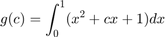

MATLAB Programming
Every time you create an M-file, you are writing a computer program using the MATLAB programming language.
Contents
User-Defined Functions
In computer programming, functions are the principal tools for managing complexity. They allow a complicated program to be broken up into many simpler parts, parts that are easier to understand, easier to write, and easier to test.
- Anonymous Functions
- Function Files
(1) Anonymous Functions
- Anonymous functions are a means of creating functions for simple expressions without having to create M-files or subfunctions.
- An anonymous function is a function that is not stored in a program file, but is associated with a variable whose data type is function_handle. Anonymous functions can accept inputs and return outputs, just as standard functions do. However, they can contain only a single executable statement.
*functionhandle=@(arguments)(expressions)*
- The @ operator creates the handle, and the parentheses () immediately after the @ operator include the function input arguments.
- Multiple Anonymous Functions : The expression in an anonymous function can include another anonymous function. This is useful for passing different parameters to a function that you are evaluating over a range of values.
Example : Use anonymous function to solve the following equation:

clear all, % First method c1=2; g_c1=integral(@(x) (x.^2+c1*x+1),0,1) % g = integral(fun,xmin,xmax) % Second method g_c=@(c) (integral(@(x) (x.^2 + c*x + 1),0,1)); g_c(2)
g_c1 = 2.333333333333333 ans = 2.333333333333333
- Anonymous functions with Multiple Inputs or Outputs: Anonymous functions require that you explicitly specify the input arguments as you would for a standard function, separating multiple inputs with commas. However, you do not explicitly define output arguments when you create an anonymous function. If the expression in the function returns multiple outputs, then you can request them when you call the function. Enclose multiple output variables in square brackets.
Example:
close all, clear all c = 20; mygrid = @(x,y) ndgrid((-x:x/c:x),(-y:y/c:y)); [x,y] = mygrid(pi,2*pi); z = sin(x) + cos(y); % surf(x,y,z)
- Arrays of Anonymous Functions: Although most MATLAB fundamental data types support multidimensional arrays, function handles must be scalars (single elements). However, you can store multiple function handles using a cell array or structure array. The most common approach is to use a cell array
Example :
clear all f = {@(x)x.^2; @(y)y+10; @(x,y)x.^2+y+10}; % access x = 1; y = 10; first=f{1}(x) second=f{2}(y) third=f{3}(x,y)
first =
1
second =
20
third =
21
(2) Function Files
- function [y1,...,yN] = myfun(x1,...,xM) : declares a function named myfun that accepts inputs x1,...,xM and returns outputs y1,...,yN. This declaration statement must be the first executable line of the function.
- Save the function code in a text file with a .m extension. The name of the file should match the name of the first function in the file.
- Valid function names begin with an alphabetic character, and can contain letters, numbers, or underscores.
- Files can include multiple local functions or nested functions.
- Use the end keyword to indicate the end of each function in a file if:
- Any function in the file contains a nested function
- Any local function in the file uses the end keyword Otherwise, the end keyword is optional.
Example :

MATLAB's Path
When a function is called at the command prompt or from within a function, MATLAB must look for the m-file that tells it how to execute that function. When MATLAB is asked to execute a function, it first looks for that function in the working directory or as a subfunction (described in the next section). If it is not in the working directory or a subfunction, MATLAB will look in folders along the MATLAB path until it finds the appropriate m-file to execute.
- Home>> set paths
Relational and Logic Operators
- Relational Operators : are operators that compare two numbers and produce a true or false result.

- Logic Operators: are operators that compare one or two logical values and produce a true or false result.

- Use the & AND operator if it is necessary to ensure that both operands are evaluated in an expression, or if the comparison is between arrays. Otherwise, use the && AND operator, since the partial evaluation will make the operation faster in the cases where the first operand is false.
- Use the | inclusive OR operator if it is necessary to ensure that both operands are evaluated in an expression, or if the comparison is between arrays. Otherwise, use the operator , since the partial evaluation will make the operation faster in the cases where the first operand is true.
Example
clear all
[1 2 3] > [3 0 2];
a=20; b=-2; c=0;d=1;
a> b;
a>b && c>d;
a==b ;
~~b;
Branching Statements
- If-Else Statement; is a code construct that executes blocks of code only if certain conditions are met. These conditions are represented as logical expressions.

- Switch-Case Statement: It permits an a particular code block is selected to execute based on the value of a single integer, character, or logical expression.

- Try-Catch Statement : is a special form of branching construct designed to trap errors. Ordinarily, when a MATLAB program encounters an error while running, the program aborts. The try/catch construct modifies this default behavior. If an error occurs in a statement in the try block of this construct, then instead of aborting, the code in the catch block is executed and the program keeps running.

Example : The following program creates an array and asks the user to specify an element of the array to display.
clear all a = [ 1 -3 2 5]; % Initialize array %{ try % Try to display an element index = input('Enter subscript of element to display: '); disp( ['a(' int2str(index) ') = ' num2str(a(index))] ); catch % If we get here an error occurred disp( ['Illegal subscript: ' int2str(index)] ); end %}
Loop Statements
- For-Loops (definite loops) : is a sequence of instructions that is repeated, or iterated, for every value of a looping array. The variable that holds the current value of the looping array is called looping variable. Sometimes for-loops are referred to as definite loops because they have a predefined begin and end.

Example : Write a program to count the number of E's in a string
S='Enter'; count=0; for i=1:length(S) if strcmp(S(i),'e')|| strcmp(S(i),'E') count=count+1; end end count
count =
2
- While-Loops (Indefinite Loops) : is a set of instructions that is repeated as long as the associated logical expression is true.

- Breaking from a loop : Inside either type of loop, you can use the command break to tell MATLAB to stop running the loop and skip to the next line after the end of the loop.
Complexity
The complexity of a function is the relationship between the size of the input and the difficulty of running the function to completion. The size of the input is usually denoted by n.

- As n gets large, the highest power dominates; therefore, only the highest power term is included in Big-O notation.
- In the previous example, O(n^2)
- Matlab Profiler : to evaluate the you code.
Techniques to Improve Performance
- Code Structure
- Use functions instead of scripts. Functions are generally faster.
- Prefer local functions over nested functions.
- Use modular programming. To avoid large files and files with infrequently accessed code, split your code into simple and cohesive functions. This practice can decrease first-time run costs.
- Programming Practices for Performance
- Preallocate — Instead of continuously resizing arrays
- Vectorize — Instead of writing loop-based code, consider using MATLAB matrix and vector operations.
- Place independent operations outside loops
- Create new variables if data type changes
- Use short-circuit operators — Use short-circuiting logical operators, && and when possible. Short-circuiting is more efficient because MATLAB evaluates the second operand only when the result is not fully determined by the first operand.
- Avoid global variables
Example: (Vectorizing Code) Compute the cumulative sum of a vector at every fifth element:
clear all x = 1:10000; ylength = (length(x) - mod(length(x),5))/5; y(1:ylength) = 0; for n= 5:5:length(x) y(n/5) = sum(x(1:n)); end % using vectorization xsums = cumsum(x); y = xsums(5:5:length(x));
Example :
clear all
x = [2 -1 0 3 NaN 2 NaN 11 4 Inf];
xvalid = x(~isnan(x))
xvalid =
2 -1 0 3 2 11 4 Inf
Debugging Programs
- use the “Set/Clear Breakpoint” option in Editor
- use M-Lint hints: A final critical feature is a tool called M-Lint. M-Lint examines a MATLAB file and looks for potential problems. If it finds a problem, it shades that part of the code in the Editor. If the developer places the mouse cursor over the shaded area, a popup will appear describing the problem so that it can be fixed.